Welcome to GIANT STEPS Tree Felling – Your Trusted Partner in Tree Care Solutions!
With over a decade of unwavering commitment to excellence, Giant Steps Tree Felling proudly stands as a leading tree care service provider in the picturesque regions of Pretoria and Centurion, South Africa. Our journey began over ten years ago with a simple yet profound mission: to enhance the beauty and safety of your outdoor spaces through professional tree felling and care services.
Experience Matters:
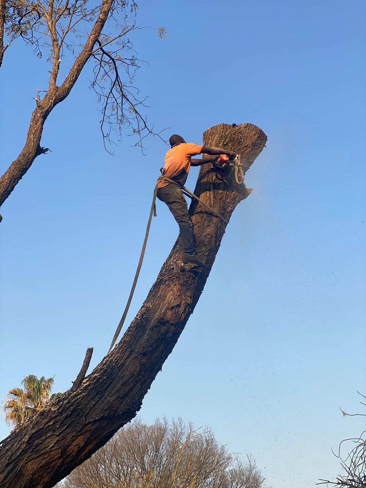
Once upon a time, all great things have humble beginnings.
At GIANT STEPS Tree Felling, experience is not just a number; it's a testament to our expertise. With a decade of hands-on knowledge and a team of skilled arborists, we've cultivated a deep understanding of the unique flora in Pretoria and Centurion. This wealth of experience empowers us to deliver tailored solutions that meet the diverse needs of our valued clients.
Comprehensive Tree Care Services:
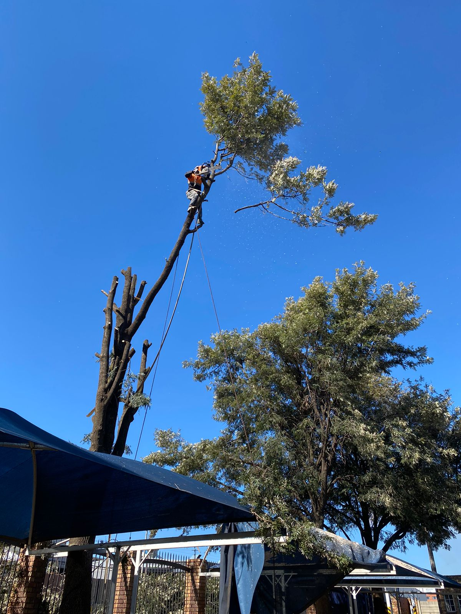
Our range of services encompasses the entire spectrum of tree care. From precise tree felling and expert trimming to meticulous tree topping and artistic tree shaping, we handle each task with precision and care. Our commitment extends beyond the obvious – we specialize in stump removal, ensuring your outdoor spaces are not only beautiful but also safe.
Beyond Trees:
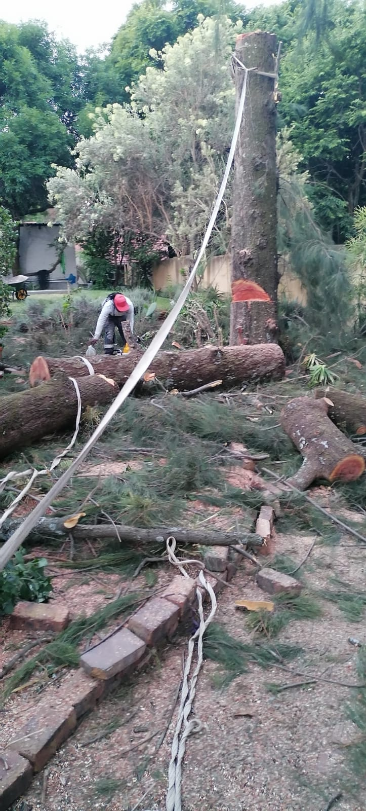
At Giant Steps Tree Felling, we recognize that a pristine outdoor environment extends beyond just trees. That's why we offer refuse removal services to leave your property spotless after our work is done. We understand that your satisfaction goes beyond the quality of our tree care – it includes the cleanliness and tidiness of the space we work in.
Customer-Centric Approach:
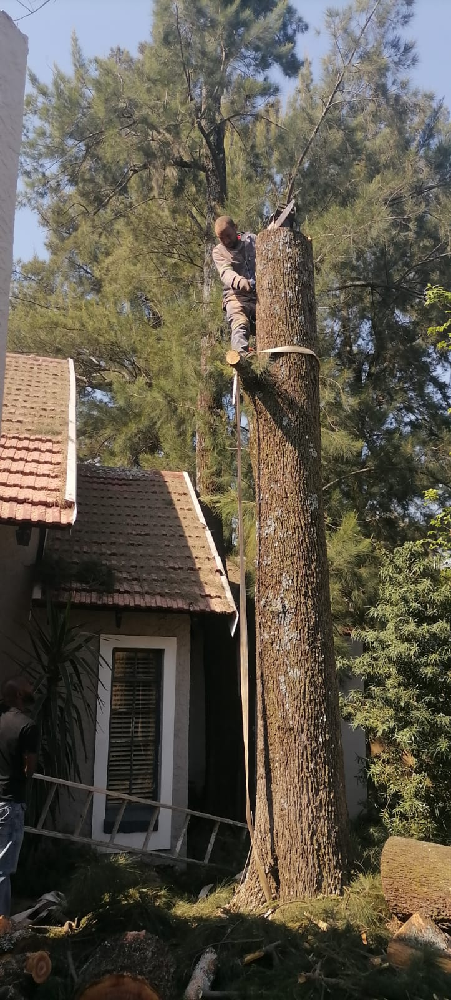
Your satisfaction is at the heart of everything we do. We take pride in our customer-centric approach, ensuring clear communication, transparent processes, and a commitment to meeting deadlines. Our friendly and knowledgeable team is always ready to address your queries, providing guidance and recommendations based on our extensive experience.
Environmental Responsibility:
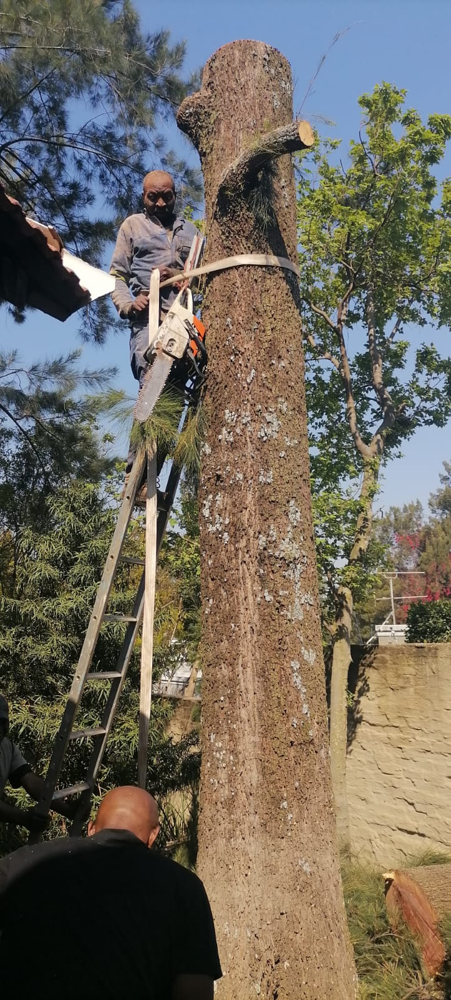
As stewards of the environment, Giant Steps Tree Felling is dedicated to responsible and sustainable tree care practices. We prioritize the health of your trees and the ecosystem they contribute to, promoting a harmonious coexistence between nature and human spaces.
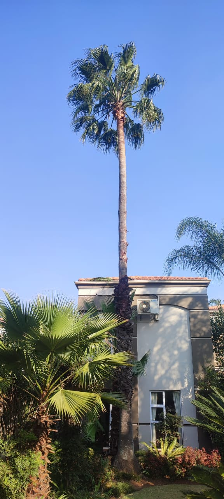
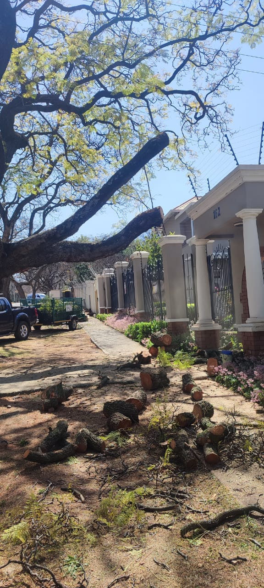
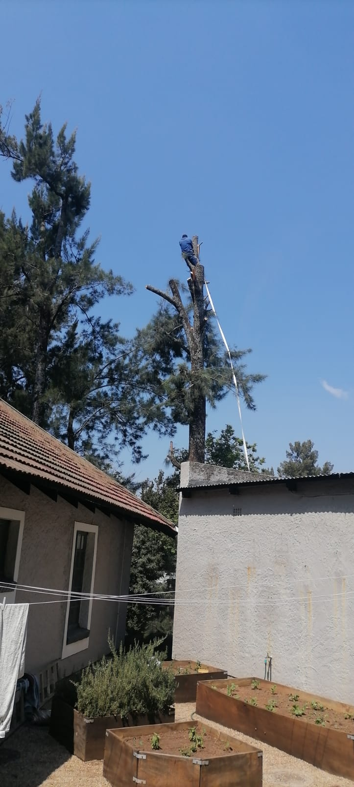
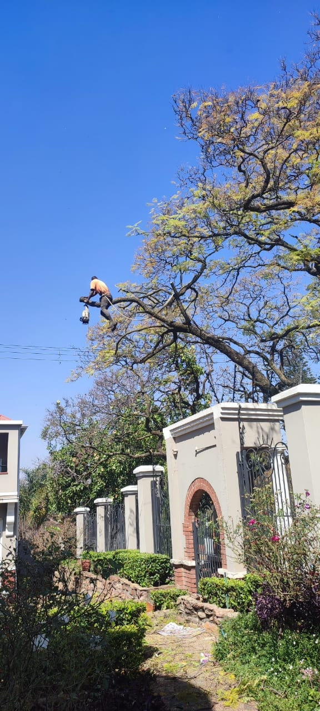
Choose Giant Steps Tree Felling for a decade-strong legacy of excellence, professionalism, and unmatched expertise in tree care services. Join our growing list of satisfied clients who have entrusted us with the care of their outdoor havens. Your trees deserve the best – and that's exactly what we deliver.
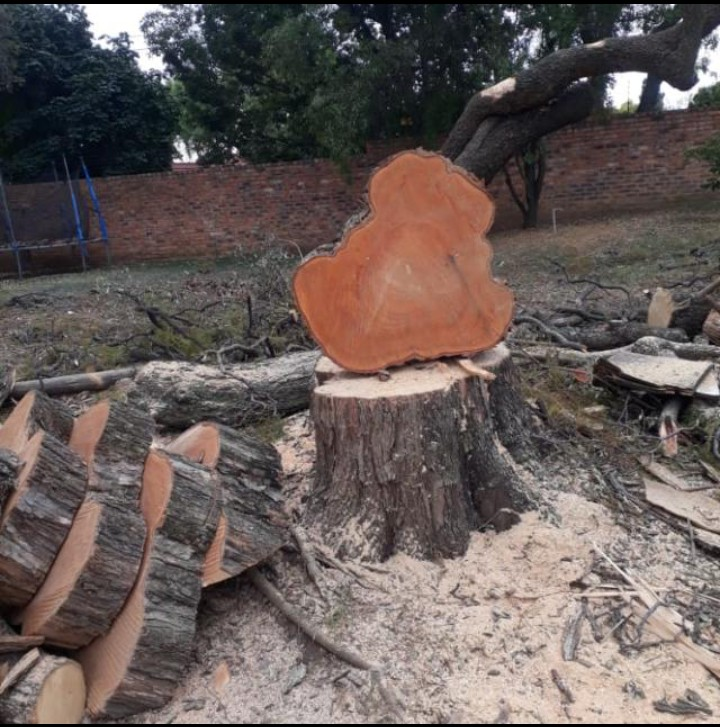
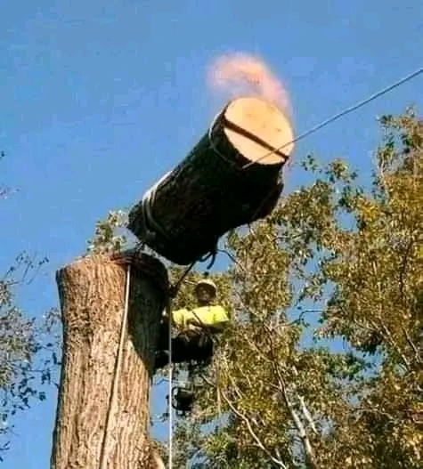
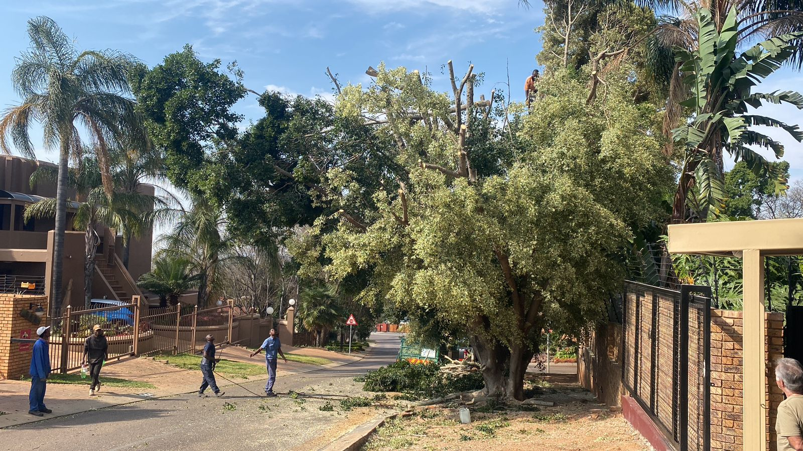
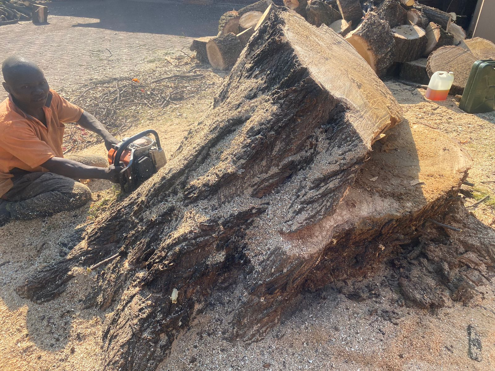
Giant Steps Tree Felling – Nurturing Nature, Crafting Beauty.
Services Provided
Tree Felling
Tree Topping
Tree Shaping
Stump Removal
Refuse Removal
We are fully insured against any accident or misharp and our employees are full covered by compensation fund.